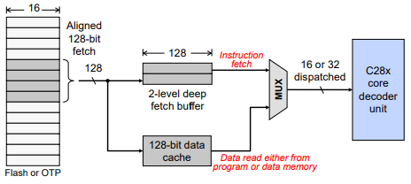
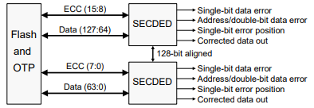
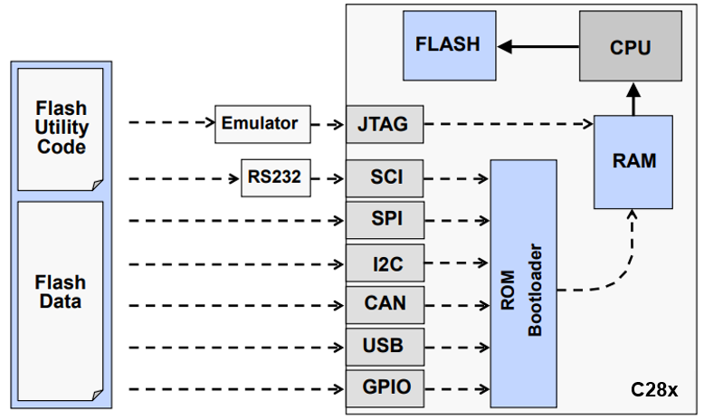

Flash Configuration and Memory Performance#
Flash Wait State Configuration#
RWAIT bit-field in the
FRDCNTLregister specifies the number of random access wait statesOTP reads are hardwired for 10 wait states (RWAIT has no effect)
Must specify the number of SYSCLK cycle wait-states; Reset defaults are maximum value (15)
Flash/OTP reads returned after (RWAIT + 1 SYSCLK cycles)
Flash configuration code should not be run from the flash memory
Example of setting the number of wait states for a flash read access:
// Bit-Field Version
FlashCtrlRegs.FRDCNTL.bit.RWaIT = 0x03;
// Driverlib Version
// ctrlBase: base address of the flash control registers: FLASH0CTRL_BASE
Flash_setWaitstates(ctrlBase, waitstates);
Note:
Refer to the device specific datasheet for detailed numbers such as RWAIT
Speeding Up Execution in Flash/OTP#

Enable prefetch mechanism:
// Bit-Field Version
FlashCtrlRegs.FRD_INTF_CTRL.bit.PREFETCH_EN = 1;
// Driverlib Version
// ctrlBase: base address of the flash control registers: FLASH0CTRL_BASE
Flash_enablePrefetch(ctrlBase);
Enable data cache:
// Bit-Field Version
FlashCtrlRegs.FRD_INTF_CTRL.bit.DATA_CACHE_EN = 1;
// Driverlib Version
// ctrlBase: base address of the flash control registers: FLASH0CTRL_BASE
Flash_enableCache(ctrlBase);
Code Execution Performance#
Ex. Assume 200MHz SYSCLKOUT and single-cycle execution for each instruction:
Internal RAM: 200 MIPS#
Fetch up to 32 bits every cycle -> 1 instruction/cycle
Flash: 200 MIPS#
Assume RWAIT=3, prefetch buffer enabled
Fetch 128 bits every 4 cycles: (128 bits)/(32-bits per instruction worst-case) -> 4 instructions/4 cycles
PC discontinuity will degrade this, while 16-bit instructions can help
Benchmarking in control applications has shown actual performance of about 90% efficiency, yielding approximately 180 MIPS
Data Access Performance#
Internal RAM has best data performance - put time critical data here
Flash performance often sufficient for constants and tables
Note that the flash instruction fetch pipeline will also stall during a flash data access
For best flash performance, arrange data so that all 128 bits in a cache line are utilized (ex. sequential access)
Assume 200MHZ SYSCLKOUT
Memory |
16-bit access |
32-bit access |
Notes |
|---|---|---|---|
Internal RAM |
1 |
1 |
|
Flash (sequential access) |
.73 (8 words/11 cycles) |
.57 (4 words/7 cycles) |
Assumes RWAIT = 3, flash data cache enabled, all 128 bits in cache are used |
Flash (random access) |
.25 (1 word/4 cycles) |
.25 (1 word/4 cycles) |
Assumes RWAIT = 3 |
Assume 100MHZ SYSCLKOUT
Memory |
16-bit access |
32-bit access |
Notes |
|---|---|---|---|
Internal RAM |
1 |
1 |
|
Flash (sequential access) |
.73 (8 words/11 cycles) |
.57 (4 words/7 cycles) |
Assumes RWAIT = 4, flash data cache enabled, all 128 bits in cache are used |
Flash (random access) |
.25 (1 word/4 cycles) |
.25 (1 word/4 cycles) |
Assumes RWAIT = 4 |
Flash / OTP Power Modes#
Power configuration settings save power by putting Flash/OTP to ‘Sleep’ or ‘Standby’ mode; Flash will automatically enter ‘Active’ mode if a Flash/OTP access is made
Note:
F280013x/F280015x devices do not support low power modes. Please refer to the Technical Reference Manual (TRM) to for details
At reset Flash/OTP is in sleep mode
Operates in three power modes:
Sleep (lowest power)
Standby (shorter transition time to active)
Active (highest power)
After an access is made, Flash/OTP can automatically power down to ‘Standby’ or ‘Sleep’ (active grace period set in user programmable counters)
Setting Flash charge pump fallback power mode to active:
// Bit-field
FlashCtrlRegs.FPAC1.bit.PMPPWR = 0x1; // 0: sleep, 1: active
// Driverlib
Flash_setBankPowerMode(ctrlBase, bank, powerMode);
Setting fallback power mode to active:
// Bit-field
// 0: sleep, 1: standby,
// 2: reserved, 3: active
FlashCtrlRegs.FBFALLBACK.bit.BNKPWR0 = 0x3;
// Driverlib
Flash_setPumpPowerMode(ctrlBase, powerMode);
Error Correction Code (ECC) Protection#
Provides capability to screen out Flash/OTP memory faults (enabled at reset)
Single error correction and double error detection (SECDED)
For every 64-bits of Flash/OTP, 8 ECC check bits are calculated and programmed into ECC memory
ECC check bits are programmed along with Flash/OTP data
During an instruction fetch or data read operation the 64-bit data/8-bit ECC are processed by the SECDED to determine one of three conditions:
No error occurred
A correctable error (single bit data error) occurred
A non-correctable error (double bit data error or address error) occurred

// Bit-Field
FlashEccRegs.ECC_ENABLE.bit.ENABLE = 0xA; // 0xA enable; other values disable
// Driverlib
Flash_enableECC(eccBase);
Flash Programming#
Flash Programming Basics#
The device CPU performs the flash programming
The CPU executes flash utility code from RAM that reads the flash data and writes it into the flash memory
We need to get the flash utility code and the flash data into RAM

Note:
The figure above displays common boot modes such as SPI, SCI, etc. that may not all apply for your specific device. To find the boot mode options available for your device refer to the table ‘All Available Boot Modes’ within your device’s Technical Reference Manual.
Minimum Steps to Program Flash#
Algorithm |
Function |
|---|---|
Erase |
Set all bits to one |
Program |
Program selected bits with zero |
Verify |
Verify flash contents |
Minimum Erase size is a sector
Minimum Program size is a bit (be careful of ECC matching)
Important not to loose power during erase step
Chance of this happening is quite small (erase step is performed sector by sector)
Flash Programming Utilities#
JTAG Emulator Based
CCS on-chip Flash programmer (Tools → On-Chip Flash)
CCS UniFlash (TI universal Flash utility)
BlackHawk Flash utilities (requires Blackhawk emulator)
Elprotronic FlashPro2000
SCI Serial Port Bootloader Based
CodeSkin C2Prog
Elprotronic FlashPro2000
Production Test/Programming Equipment Based
BP Microsystems programmer
Data I/O programmer
Build your own custom utility
Can use any of the ROM bootloader methods
Can embed flash programming into your application
Flash API algorithms provided by TI
For a complete list of third party flash programming tools refer to C2000-3P-SEARCH
Resources#
Feedback
Please provide any feedback you may have about the content within C2000 Academy to: c2000_academy_feedback@list.ti.com